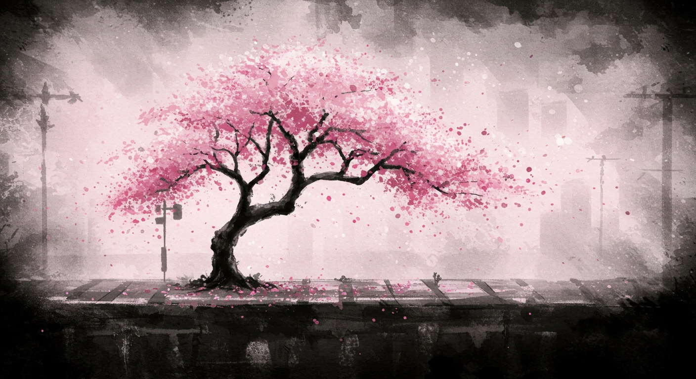

まだ行ったことがない街は、沢山ある。
時間はあるけど、行きたい場所がない。
人混みも、観光地の雰囲気も、ちょっと苦手。
一人で出かけたいけれど、きっかけがない。
ミステリードは、そんなあなたのための“旅の謎解き”です。
決まった時間も、集合場所もない。旅は、あなたのペースで。
配信一覧
 NEW
NEW
思い出のコーヒーと胡椒を挽く男
商店街に漂う“消えたモチーフ”の噂。看板、レシート、古い掲示板——街の断片から真相へ近づく。
 NEW
NEW
茎と魚は何故消えたのか？
商店街に漂う“消えたモチーフ”の噂。看板、レシート、古い掲示板——街の断片から真相へ近づく。

幼い時の記憶 懐かしの遊具
なくなった遊具の手がかりを追って、路地裏と屋上をめぐる小さな探偵行。最後に待つのは——。

戦艦島
地図から消えた島影の由来。古写真、社標、倉庫跡——欠けたピースを埋めていく現地パズル。